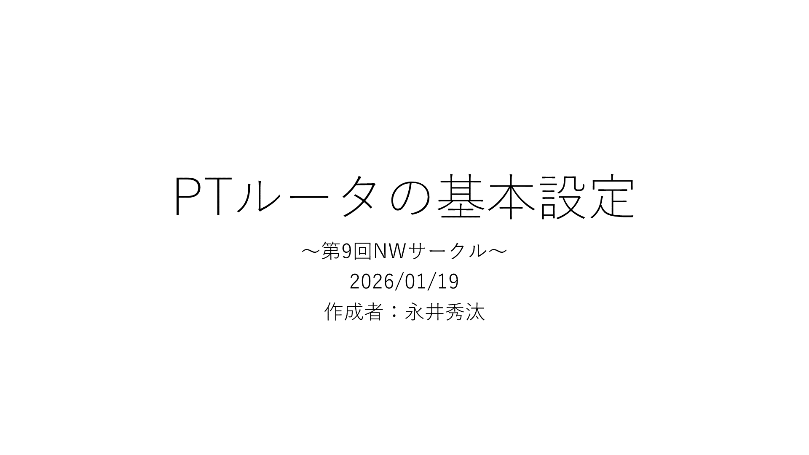
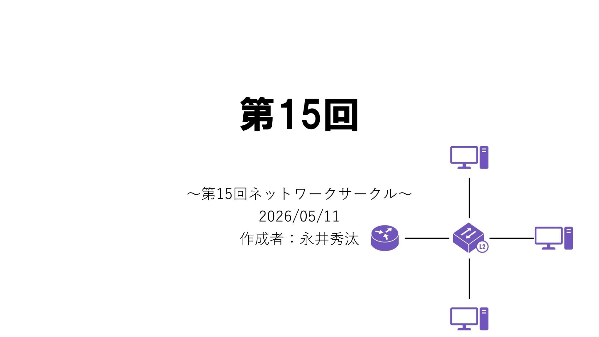
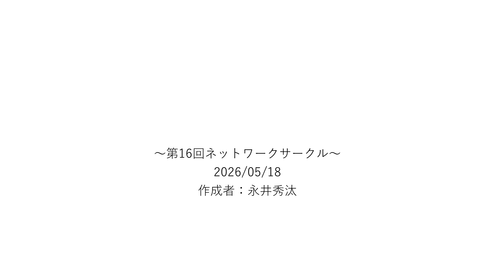

🚀 PT 導入・セットアップ
🚀 PT 導入・セットアップ
Cisco Packet Tracerの 導入（第3版）
Cisco Packet Tracerの 導入（第3版） / 作成日：2026/05/10 / Cisco Networking Academyアカウント作成
 🚀 PT 導入・セットアップ
🚀 PT 導入・セットアップ
Cisco Packet Tracerの導入
～第6回NWサークル～ / Cisco Packet Tracerとは / Cisco Networking Academyが提供するCisco社公式の ネットワークシミュレータ
 🚀 PT 導入・セットアップ
🚀 PT 導入・セットアップ
Cisco Packet Tracerの導入_修正版
～第10回NWサークル～ / Cisco Packet Tracerとは / Cisco Networking Academyが提供するCisco社公式の ネットワークシミュレータ
 ⚙️ PT 基本操作・構成
⚙️ PT 基本操作・構成
Cisco Packet Tracerの 基本操作
Cisco Packet Tracerの 基本操作 / ～第7回NWサークル～ / 基本操作手順

🔧 ルータ基本設定PTルータの基本設定
～第9回NWサークル～ / サークル資料に関して / Googleドライブの公開URL https://drive.google.com/drive/folders/1yhnA8Jg5ulxvuZ55kGLPcHXQPOTzk-Tp



🌐 ネットワーク基礎・歴史第15回
～第15回ネットワークサークル～ / 今日のIT豆知識① / Chrome Flags …ChromeやBraveなどのChromiumベースのブラウザに搭載されている試験運用設定 →ブラウザ動作の高速化や縦タブバーなど，通常は設定できない機能が豊富（※機能の移り変わり激しい）

🌐 ネットワーク基礎・歴史～第16回ネットワークサークル～
2026/05/18 / インターネットの起源 / 1969年… “ARPANET”（アーパネット）の構築 米国防総省“ARPA”（アーパ）が軍事・研究